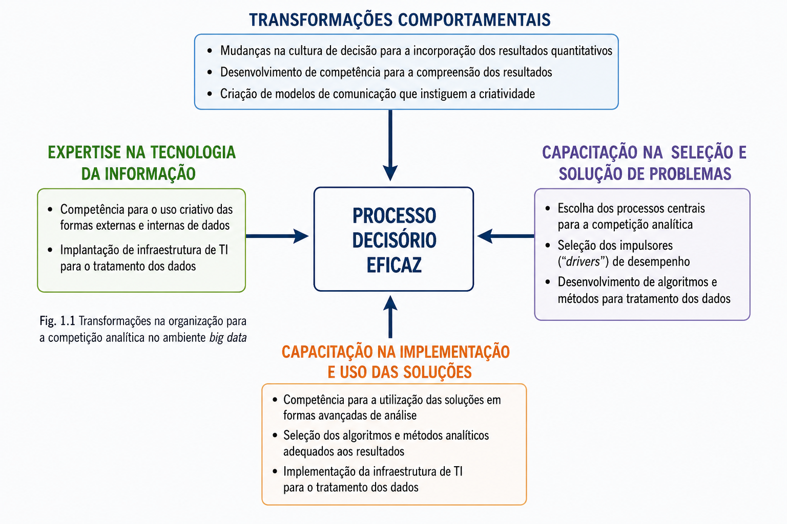
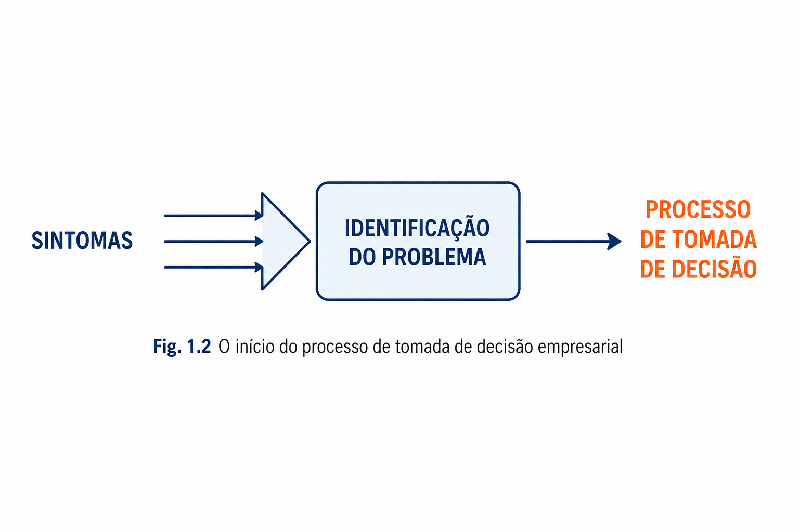
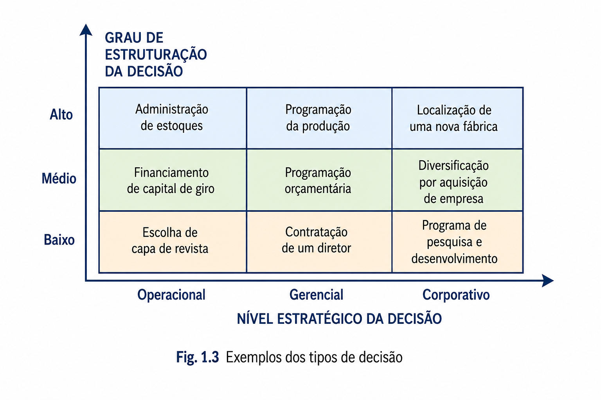
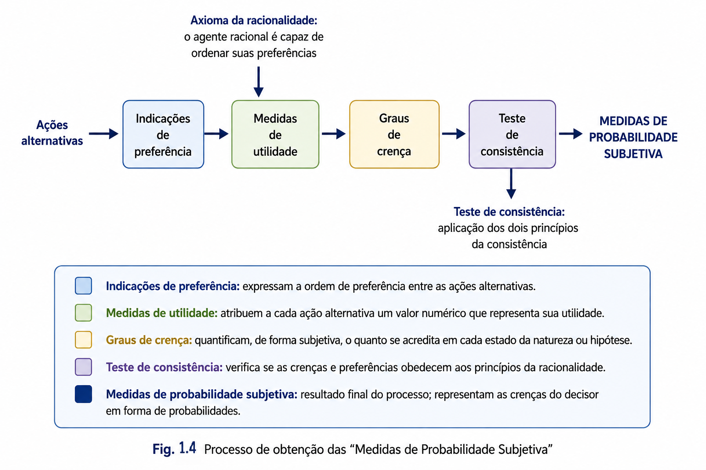
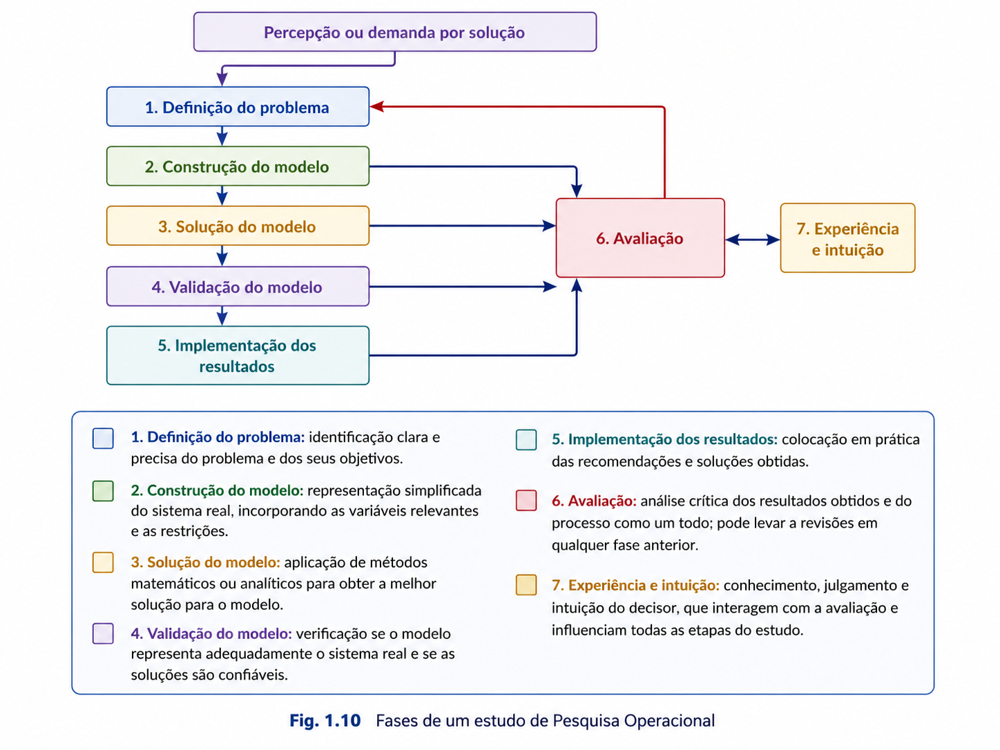
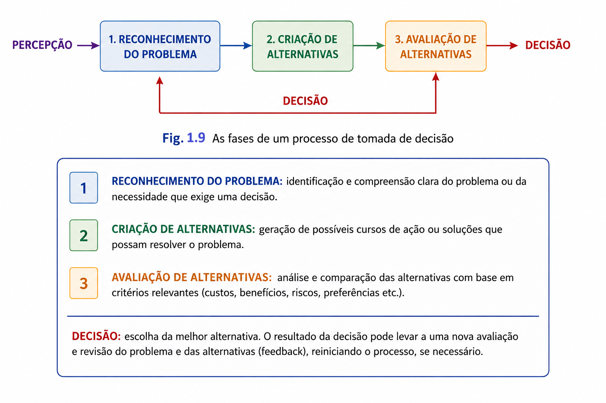
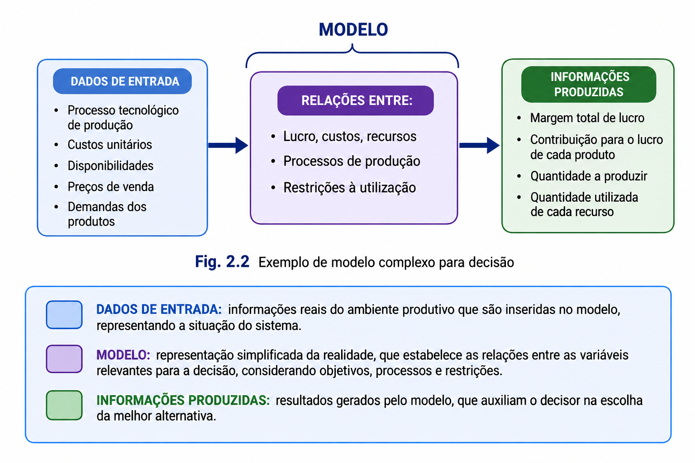
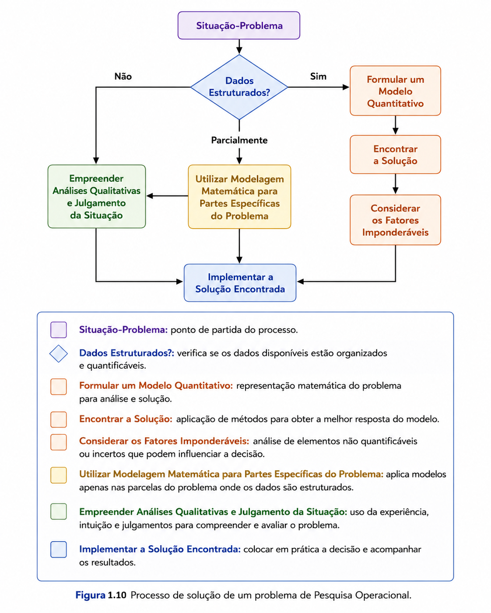

1.1 / fundamentos
Origem e finalidade da Pesquisa Operacional
A Pesquisa Operacional surgiu da necessidade de empregar métodos científicos na análise de operações complexas. O termo começou a ser utilizado no final da década de 1930, mas a área ganhou projeção durante a Segunda Guerra Mundial, quando equipes formadas por matemáticos, físicos, engenheiros e especialistas de diferentes campos passaram a estudar problemas militares de forma integrada. O objetivo era utilizar recursos escassos com maior eficácia, planejar operações e comparar alternativas com base em evidências.
Após a guerra, os mesmos princípios foram transferidos para organizações civis. Empresas e órgãos públicos enfrentavam problemas semelhantes de produção, estoques, transportes, alocação de pessoas, planejamento financeiro e distribuição de recursos. O crescimento das organizações aumentou a quantidade de variáveis e relações envolvidas nas decisões, tornando insuficiente a análise baseada apenas na intuição ou na experiência isolada de uma área.
Dois fatores impulsionaram decisivamente o desenvolvimento da Pesquisa Operacional. O primeiro foi o avanço dos métodos matemáticos, entre os quais se destaca o método Simplex, desenvolvido por George Dantzig em 1947 para resolver problemas de Programação Linear. O segundo foi a evolução dos computadores, que tornou possível processar modelos maiores e executar cálculos que seriam impraticáveis manualmente.
Definição de trabalho
A Pesquisa Operacional aplica métodos científicos, analíticos e quantitativos para estruturar problemas, comparar alternativas e apoiar decisões relacionadas à condução e à coordenação das operações de uma organização.
Sua finalidade não se limita a produzir cálculos. A técnica matemática é um meio para compreender o problema e produzir informações úteis à decisão. Uma solução ótima do ponto de vista matemático ainda deve ser examinada quanto à sua viabilidade técnica, econômica, humana e institucional.
1.2 / ambiente informacional
Big Data, competição analítica e processo decisório
A capacidade de tomar decisões fundamentadas tornou-se uma fonte de vantagem competitiva. Organizações orientadas por dados procuram transformar registros operacionais, informações de clientes, sensores, redes digitais e dados externos em conhecimento aplicável ao planejamento e ao controle. Esse movimento é frequentemente associado à competição analítica: empresas competem não apenas por produtos e mercados, mas também pela qualidade e pela velocidade com que analisam informações.
O ambiente de Big Data amplia esse desafio. Os dados são produzidos em grande volume, elevada velocidade e múltiplos formatos. Entretanto, acumular dados não garante melhores decisões. É necessário estabelecer infraestrutura de tecnologia da informação, selecionar dados relevantes, construir modelos adequados, interpretar os resultados e incorporá-los à cultura gerencial.
A Figura 1.1 mostra que um processo decisório eficaz depende de transformações complementares. A organização precisa desenvolver competência tecnológica, capacidade para selecionar e solucionar problemas, condições para implementar as soluções e uma cultura que compreenda e utilize resultados quantitativos. Nenhum desses elementos, isoladamente, é suficiente.

Adaptado de Andrade, Eduardo L., Introdução à Pesquisa Operacional.
A dimensão tecnológica compreende o uso criativo das fontes internas e externas de dados e a implantação de infraestrutura para armazenar, tratar e disponibilizar informações. A capacitação para selecionar problemas exige identificar processos centrais, escolher indicadores de desempenho e desenvolver métodos de análise. A implementação envolve transformar resultados em ações, enquanto a mudança comportamental cria condições para que as pessoas compreendam, discutam e utilizem os resultados dos modelos.
1.3 / contexto gerencial
O contexto gerencial das decisões
Uma decisão começa quando alguém percebe um sintoma, uma necessidade ou uma oportunidade. Sintomas, porém, não são necessariamente o problema. Queda nas vendas, atrasos, excesso de estoque ou baixa produtividade são manifestações observáveis que precisam ser investigadas. A identificação correta do problema é o primeiro passo do processo decisório, pois uma análise sofisticada pode produzir uma resposta precisa para uma questão formulada de maneira incorreta.

Adaptado de Andrade, Eduardo L., Introdução à Pesquisa Operacional.
As decisões também variam segundo o nível estratégico e o grau de estruturação. Decisões operacionais estão ligadas ao funcionamento cotidiano; decisões gerenciais coordenam recursos e políticas de uma área; decisões corporativas afetam a direção e o futuro da organização. Paralelamente, uma decisão pode ser altamente estruturada, quando seus dados, regras e critérios são conhecidos; parcialmente estruturada; ou pouco estruturada, quando predomina a incerteza e o julgamento.

Adaptado de Andrade, Eduardo L., Introdução à Pesquisa Operacional.
A classificação não é absoluta. Uma decisão corporativa pode conter partes estruturadas que admitem modelagem matemática e partes qualitativas que exigem experiência, negociação e análise política. O papel do analista é reconhecer quais componentes podem ser formalizados e quais devem permanecer sob julgamento gerencial.
1.4 / racionalidade
Qualidade da decisão, evidências e crenças
A qualidade de uma decisão não deve ser confundida apenas com o resultado observado. Uma decisão cuidadosamente formulada pode produzir resultado desfavorável por causa de eventos imprevisíveis; uma decisão mal preparada pode, por acaso, gerar resultado positivo. Por isso, a avaliação deve considerar a qualidade do processo: clareza do problema, consistência das preferências, uso das evidências, estimativa das consequências e coerência entre objetivos e ações.
O decisor interpreta evidências e, a partir delas, formula crenças sobre acontecimentos futuros. A crença não é uma certeza absoluta, mas uma avaliação subjetiva que pode ser representada por uma probabilidade. Quanto mais consistentes e relevantes forem as evidências, maior tende a ser a confiança atribuída a uma hipótese.

Adaptado de Andrade, Eduardo L., Introdução à Pesquisa Operacional.
Os elementos apresentados na figura podem ser interpretados da seguinte forma: a evidência é uma observação aceita como verdadeira para fins da análise; a formulação da crença relaciona essa evidência a uma proposição; a proposição é a hipótese sobre o estado do mundo; e o grau de crença expressa o quanto o decisor considera provável que a hipótese seja verdadeira. A qualidade da decisão aumenta quando essas relações são explicitadas, permitindo discutir pressupostos, fontes de informação e níveis de confiança.
Além das crenças, o decisor possui preferências e atribui utilidade às consequências. Uma decisão racional procura ordenar alternativas de maneira consistente, ponderando benefícios, custos, riscos, valores e expectativas de sucesso. A racionalidade é limitada por tempo, informação incompleta e capacidade de processamento; por isso, modelos auxiliam a organizar a análise sem eliminar o julgamento humano.
1.5 / evolução metodológica
Da abordagem clássica à abordagem atual
A abordagem clássica
A abordagem clássica parte da ideia de que o agente racional consegue ordenar suas preferências e atribuir valores às alternativas. O processo utiliza indicações de preferência, medidas de utilidade, graus de crença e testes de consistência para produzir medidas de probabilidade subjetiva. Essa estrutura tornou possível representar matematicamente aspectos importantes da decisão.

Adaptado de Andrade, Eduardo L., Introdução à Pesquisa Operacional.
As indicações de preferência expressam a ordem em que o decisor valoriza as alternativas. As medidas de utilidade atribuem valores às consequências, permitindo comparar ganhos e perdas. Os graus de crença representam avaliações subjetivas sobre eventos incertos. O teste de consistência verifica se preferências e crenças obedecem aos princípios adotados. O resultado é uma representação quantitativa que apoia a comparação racional das alternativas.
Em sua aplicação tradicional à Pesquisa Operacional, a sequência costuma ser apresentada como identificação do problema, levantamento das informações, modelagem, obtenção de um resultado ótimo e decisão de aceitar ou recusar a recomendação. A experiência e a intuição aparecem principalmente na avaliação final da solução.

Adaptado de Andrade, Eduardo L., Introdução à Pesquisa Operacional.
A abordagem atual
A prática mostrou que a definição do problema e a seleção das informações não podem ser tratadas como etapas simples e definitivas. Frequentemente, a modelagem produz novas percepções, revela que dados inicialmente considerados importantes são irrelevantes ou indica que o problema verdadeiro é diferente daquele formulado no início.
Na abordagem atual, experiência e intuição interagem com todas as etapas. A pergunta “este é o problema certo?” permanece aberta durante o estudo, assim como a pergunta “estas informações são relevantes?”. A solução matemática deixa de ser o único centro do trabalho e passa a integrar um processo iterativo de aprendizagem.

Adaptado de Andrade, Eduardo L., Introdução à Pesquisa Operacional.
Essa abordagem não reduz a importância do rigor matemático. Ela amplia o rigor para incluir a qualidade da formulação, a validade dos dados, a aderência do modelo ao contexto e a interpretação crítica dos resultados. O melhor algoritmo não compensa a escolha do problema errado.
1.6 / representação
Modelos e processo de modelagem
Um modelo é uma representação simplificada de um sistema real, construída para uma finalidade específica. O sistema real contém inúmeros detalhes, relações e variáveis. O analista seleciona os elementos que possuem maior influência sobre a decisão e cria uma estrutura reduzida, suficientemente simples para ser analisada e suficientemente fiel para produzir informações úteis.

Adaptado de Andrade, Eduardo L., Introdução à Pesquisa Operacional.
A simplificação exige critério. Se o modelo incluir detalhes demais, pode se tornar caro, lento e difícil de compreender. Se excluir variáveis essenciais, seus resultados podem ser enganosos. O escopo deve ser definido conforme a decisão a ser apoiada, o horizonte de tempo e o nível de precisão necessário.
Os modelos permitem visualizar a estrutura do sistema, explicitar relações, testar hipóteses e comparar alternativas sem intervir diretamente na realidade. Em problemas simples, o decisor utiliza modelos mentais; em problemas complexos, são necessários modelos conceituais, matemáticos, estatísticos, de simulação ou de otimização.
1.7 / método de estudo
Fases de um estudo de Pesquisa Operacional
Embora os estudos variem conforme o problema, é possível reconhecer um conjunto de fases recorrentes: definição do problema, construção do modelo, solução, validação, implementação e avaliação. A experiência e a intuição acompanham todo o processo, e os resultados de uma etapa podem exigir revisões nas anteriores.

Adaptado de Andrade, Eduardo L., Introdução à Pesquisa Operacional.
Definição do problema
O estudo começa pela percepção de uma necessidade e pela definição clara do problema, dos objetivos, do escopo, do horizonte de tempo, dos recursos e das restrições. A pergunta central não é apenas “como resolver?”, mas “qual decisão precisa ser tomada?”.
Construção e solução do modelo
Na construção, são selecionadas variáveis, parâmetros e relações relevantes. Na solução, aplica-se um método compatível com o tipo de modelo. Em otimização, procura-se a melhor alternativa dentro das condições estabelecidas; em simulação, avaliam-se cenários e comportamentos possíveis.
Validação
A validação verifica se o modelo representa adequadamente o sistema para a finalidade pretendida. Isso pode envolver comparação com dados históricos, análise de casos conhecidos, revisão por especialistas e testes de sensibilidade.
Implementação e avaliação
A solução precisa ser convertida em ações. A implementação envolve comunicação, responsabilidades, recursos e acompanhamento. A avaliação compara os resultados observados com os objetivos e alimenta novas revisões do problema ou do modelo.
1.8 / integração
Do processo decisório à escolha da abordagem
O processo de tomada de decisão pode ser descrito como uma sequência de percepção, reconhecimento do problema, criação de alternativas, avaliação e escolha. A decisão não encerra necessariamente o processo: seus resultados podem gerar novas informações, exigir revisão das alternativas ou até modificar a compreensão do problema original.

Em problemas organizacionais, o grau de estruturação dos dados orienta a abordagem. Quando os dados são estruturados e quantificáveis, pode-se formular um modelo quantitativo. Quando apenas parte do problema é estruturada, a modelagem matemática deve ser aplicada às partes específicas e combinada com análise qualitativa. Quando os dados são predominantemente não estruturados, a experiência e o julgamento assumem papel maior.

Adaptado de Moreira, Daniel A., Pesquisa Operacional: Curso Introdutório.
A figura sintetiza a principal conclusão do capítulo: a Pesquisa Operacional não pretende substituir o decisor nem transformar toda situação em um problema matemático. Sua contribuição é estruturar aquilo que pode ser estruturado, produzir informações sobre alternativas e integrar métodos quantitativos ao conhecimento gerencial. A decisão final resulta da combinação entre dados, modelos, experiência, valores e responsabilidade.
Síntese do capítulo
Modelos são instrumentos de aprendizagem e apoio à decisão. Sua qualidade depende da correta definição do problema, da seleção das variáveis relevantes, da validade dos dados, da interpretação dos resultados e da capacidade de transformar recomendações em ações.